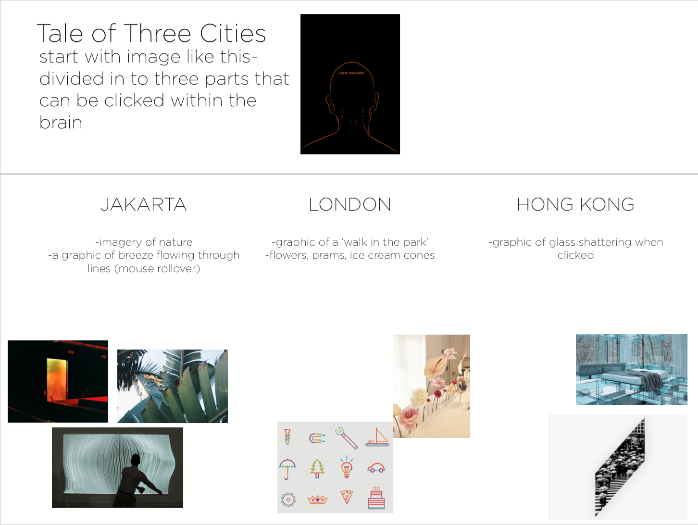

I want to create an interactive story about myself, essentially. I have moved around so much in my life, and had a chance to be a part of so many cultures, groups and settings. It would be interesting if I could translate this experience to a digital curation that explains three cities that define me: London, Jakarta and Hong Kong. I want to have visual graphics that delineate the difference of maturity within me, a contrast of feeling, of warmth, of creativity. Rather than an external visualization of three places, it is a visual interpretation of the internal.
LONDON: Very playful, childish, girly (pinks) - images and icons that spread across the page and shake and vibrate when clicked
HONG KONG: Isolation, contemplation, coldness (shades of blues) - shards of images and shapes, sharp and jutting across the page. Shattering glass - sound
JAKARTA: warmth, family, friendship (greens, yellows, orange) - create a graphic made up of fluid lines that moves and bends as the mouse rolls over it
